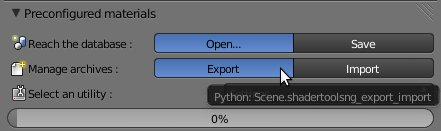
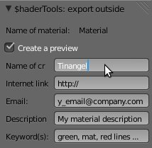
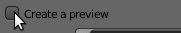
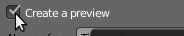
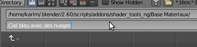
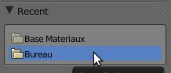
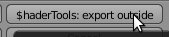
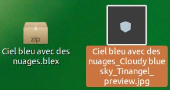

| Export : |
| This menu allows to export a material and share it. |
| You must select and click on 'Export' button into ShaderTool user interface : |
|  |
| In the left panel, put informations (creator, description ....) : |
|  |
| If you need a preview of the material exported (*.blex), position mouse cursor on check box 'Create a preview' : |
|  |
| Check the box: |
|  |
| You must give name to your material inside file name area : |
|  |
| Then select directory where your material must be exported (in this example it's desktop path) : |
|  |
| Then you must click on 'Export' button at top right corner of your screen : |
|  |
| Finally, use your file browser and go to path previously selected (dektop path for this example) and you can share your material : |
|  |